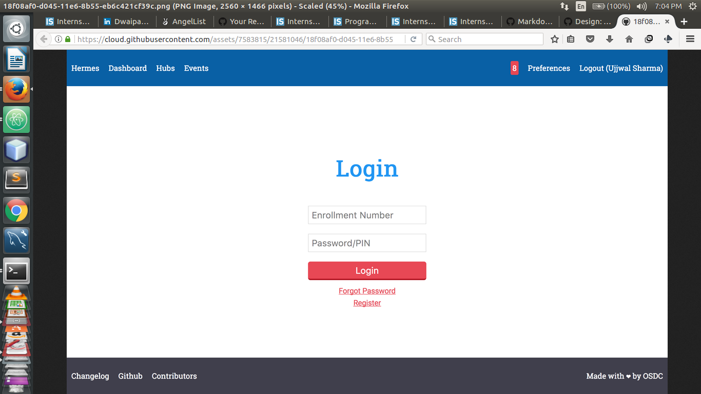
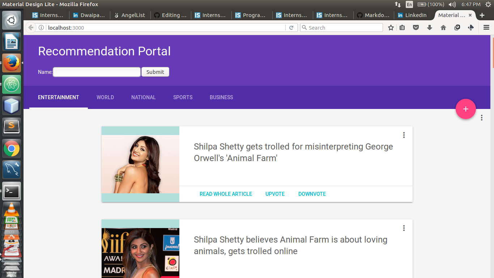

Hermes
Hermes is an all access portal to everything going on in the college. Ranging from events to study material and so on.
The project involves making the basic setup of the webapp. The frontend is setup using reactjs on redux. The back end is setup on PostgreSQL and Golang. My role is to develop the databases along with the REST api

Zeus
Project description
Zeus is a recommendation portal for articles and music. It uses both user user similarity and article article similarity to compute the recommendations.
The project involved writing the recommendation module in Python and Incorporating it with the Webapp made using Reactjs, expressjs, Mongodb and Flask.

Document Classifier
Uses Apache Lucene and Python Gensim to classify documents using a Naive Bayess Classifier. Nltk implementation gave very less accuracy

Article Similarizer
Uses Python Gensim to calculate similarity for a recommendation engine.

OSDC-bot
The bot lives in the osdc channel in Gitter. It has a language parser made with the help of Python Nltk. The parser chunks out information from the input and then the bot does actions likewise. It has a wide array of functions such as location, joke, temperature etc.

InSwipes Data Handling
The project required summarizing, categorizing and crawling news articles from various sources such as Google News to be shown in an Android Application. To build the summarizer, Machine Learning algorithms were used alongwith a ranking algorithm. The summarizer was written in Java while the crawler was written in Python. A dashboard in PHP was also created to manipulate data in the back end.

Clickbins User Interface
Clickbins is a startup catering to waste management and disposal. We had to develop the user-side Android application for the system. The main architecture composed of a backend structure from which data was taken after going through certain validation procedures.

CriminalHotspot
Criminal Hotspot takes into input real time data from police databases and clusters the crimes according to their location and displays them on a map.
This will help in setting up police stations at the right place at the right time.

Webmemex
Mozilla extension that is a part of Worldbrain's project. Worldbrain is a GSOC organization that is looking to memoize the internet.

Woostyle User Interface
The project was basically to develop a website for the users of an E-commerce enterprise. It required us to build both the backend and front platform. Backend was done using SQL and the front end comprised of HTML CSS and JavaScript. This was done by my team members.
Also it involved integrating API's of other e-commerce websites such as Amazon and Flipkart.
This part of the project was done by me. It required sending requests through cURL via PHP scripts.